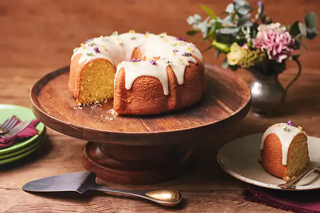

Receita de Bolo de Laranja

Tempo de preparo: 2 horas
Serve 12 fatias
Bolo de Laranja
Um bolo fácil de preparar, de liquidificador, que faz a maior presença. O segredo é a cobertura de glacê toda decorada com flores e casca de laranja. Perfumado, azedinho, bolo de laranja é um clássico que perfuma a casa inteira enquanto assa.
Para a massa
Ingredientes
- 2 laranjas pêra
- 2 ovos
- 1 xícara (chá) de óleo
- 1½ xícara (chá) de açúcar
- 2 xícaras (chá) de farinha de trigo
- 2 colheres (chá) de fermento em pó
- manteiga e farinha de trigo para untar e polvilhar a fôrma
Modo de Preparo
- Preaqueça o forno a 180 °C (temperatura média). Com um pedaço de papel toalha, unte com manteiga uma fôrma com furo no meio de 24 cm de diâmetro – espalhe uma camada bem fina e uniforme. Polvilhe com farinha e chacoalhe bem para espalhar. Bata sobre a pia para retirar o excesso.
- Descasque uma das laranjas, eliminando toda a parte branca. Lave bem a outra sob água corrente e corte e descarte as pontas, mantendo a casca (se preferir um sabor menos amargo, descasque e elimine a parte branca das duas laranjas). Corte as laranjas em quatro gomos. Descarte o miolo branco e os caroços, corte cada gomo em três pedaços e transfira para o liquidificador.
- Numa tigela pequena quebre um ovo de cada vez e transfira para o liquidificador – se um estiver estragado você não perde a receita. Junte o óleo, o açúcar e bata bem até ficar liso.
- Numa tigela média, misture a farinha com o fermento em pó.
- Transfira a laranja batida com os líquidos para uma tigela grande e acrescente a farinha com o fermento aos poucos, passando pela peneira. Misture delicadamente com o batedor de arame a cada adição para incorporar.
- Transfira a massa do bolo para a fôrma e leve ao forno para assar por cerca de 50 minutos. Para verificar se o bolo está pronto: espete um palito na massa, se sair limpo pode retirar do forno; caso contrário, deixe por mais alguns minutos, até que asse completamente.
- Retire o bolo do forno e deixe esfriar por 30 minutos antes de desenformar – cuidado, o bolo pode rachar se estiver quente ao ser desenformado. Cubra a fôrma com um prato e vire de uma só vez para desenformar. Atenção: o bolo deve estar completamente frio antes de cobrir com o glacê.
Para o glacê e decoração
Ingredientes
- 1 xícara (chá) de açúcar de confeiteiro
- 1½ colher (sopa) de caldo de laranja coado
- 20 flores de mel comestíveis para decorar
- 3 pedaços de casca de laranja cristalizada para decorar
Modo de preparo
- Antes de preparar o glacê, corte a base do cabinho das flores de mel e separe os ramos em 2 buquês menores (assim a decoração fica mais delicada). Corte a casca de laranja cristalizada em pedaços pequenos, de cerca de 0,5 cm.
- Sobre uma tigela, passe o açúcar de confeiteiro pela peneira – assim é mais fácil de dar o ponto no glacê e ele fica bem lisinho.
- Adicione 1 colher (sopa) do caldo de laranja e misture bem. Vá adicionando o restante do caldo aos poucos, até dar o ponto – a quantidade de líquido total usada na receita pode variar de acordo com a marca do açúcar de confeiteiro e até a umidade do ar. Mexa bem a cada adição, no início pode parecer que está muito duro, mas é assim mesmo. A textura deve ser de uma pasta grossa.
- Leve a tigela ao micro-ondas para rodar por 15 segundos, em potência média – dessa forma o glacê fica fluido sem ser diluído, ideal para ser aplicado no bolo. O resultado é aquela cobertura branquinha perfeita que não escorre totalmente. Retire do micro-ondas e mexa bem. Volte ao micro-ondas para rodar em etapas de 5 segundos extras até atingir a consistência de uma gemada – ao levantar uma porção da colher o glacê não deve afundar rapidamente no restante da tigela.
- Com uma concha vá derramando o glacê sobre o bolo aos poucos, para que caia de maneira uniforme cobrindo o topo e parte da lateral do bolo.
- Disponha as flores e os pedaços de casca de laranja sobre o glacê ainda úmido e deixe secar completamente antes de servir – isso leva cerca de 20 minutos.
OBS: você pode decorar o bolo com rodelas de laranja desidratada cortada em pedaços, folhas de louro ou apenas raspas de laranja. O bolo pode ser decorado com o glacê até um dia antes de servir, mas as flores comestíveis perdem o viço de um dia para o outro.
Sabor extra
Para dar mais uma camada de sabor você pode adicionar ¼ de colher (chá) de água de flor de laranjeira ao glacê.